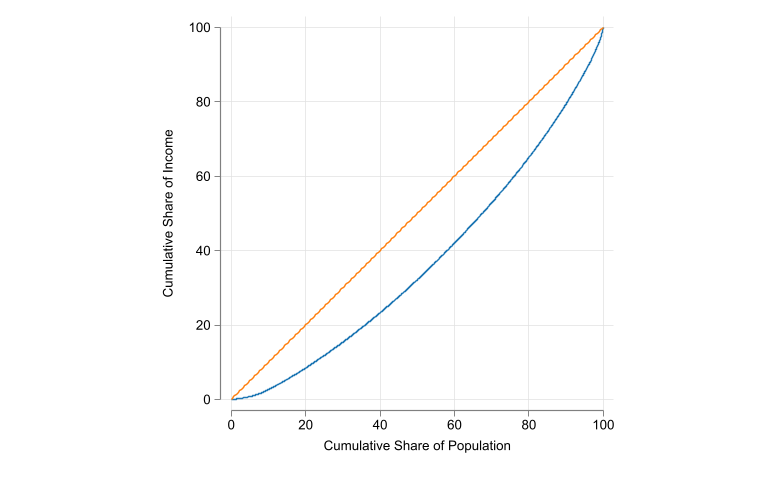

Economic inequality refers to how economic variables are distributed among individuals in a group, among groups in a population, or among countries.
Inequality of What?
inequality of opportunities, for example access to employment or education
inequality of outcomes, for example material dimensions of human well-being, such as the level of income, educational attainment, health status and so on.
For now we will focus on income inequality.
How do you analyze (measure) inequality?
There are various approaches that have been used for the analysis of Inequality
Intuitive approach
Unaxiomatic approach used to describe inequality.
Normative approach-Social welfare
Uses explicit concepts of welfare functions to quantify inequality
Information theory
Quantifies inequality treating it as a problem of comparing income distribution probabilities.
Axiomatic approach
Uses a series of axioms to create measures of inequality
Preliminaries
Regardless of the approach, there are some basic steps required to measure inequality
Define the population of interest
Define the measure of interest
Adjust for prices (if necessary)
Adjust for individual heterogeneity (needs) (if necessary)
Mathematical Preliminaries
Let \(y_i\) be the income of individual \(i\) in the population. Assume that \(y_i>>0\).
Assume that \(y_i\) can be characterized by a probability distribution function \(f(y)\).
frause oaxaca, cleargen wage = exp(lnwage)sort wage wt // sort by income and weight // Estimate Totals for non missing dataegen twage = sum(wage * wt) if wage!=.egen tpop = sum(wt) if wage!=.// get cumulative sharesgen lc_i = sum( (wage*wt/twage) )*100 if wage!=.gen p_i = sum( (wt/tpop) )*100 if wage!=.
Code
two (line lc_i p_i) /// Lorenz Curve ( function x, range(0 100) ) , /// 45 degree line aspect(1) ysize(5) xsize(8) ///xtitle("Cumulative Share of Population") ///ytitle("Cumulative Share of Income") ///legend(off)

Lorenz Curve
ssc install glcurve // installs command for Generalized Lorenz Curveglcurve wage [aw = wt], /// provides variable and weight lorenz // Request ploting the Lorenz Curve
Inequality Measures
There are several measures of inequality. The most popular are:
Uses a series of axioms to create measures of inequality
How to Compare Inequality
a note
Significance test
As discussed in Session 1, we can use a t-test to compare means.
This requires estimating the standard error of the mean, use mean command, or regress
Similarly, it may be as important to test whether two distributions (or inequality measures) are different.
This requires estimating the standard error of the inequality measure.
This is not as straightforward as the mean.
Easiest methods:
Bootstrap: requires bootstrap weights for survey data.
Influence function: requires deriving the influence function of the inequality measure.
Bootstrap
Bootstrap its a non-parametric method to estimate the standard error of a statistic. Its based on Resampling and re-estimating data.
bootstrap gini=r(coeff): sgini wage
warning: sgini does not set e(sample), so no observations will be excluded from the resampling because of missing values or other reasons. To exclude observations, press Break, save the data, drop any observations that are to be excluded, and rerun
bootstrap.
Bootstrap results Number of obs = 1,647
Replications = 50
Command: sgini wage
gini: r(coeff)
------------------------------------------------------------------------------
| Observed Bootstrap Normal-based
| coefficient std. err. z P>|z| [95% conf. interval]
-------------+----------------------------------------------------------------
gini | .2460329 .0063639 38.66 0.000 .2335599 .2585059
------------------------------------------------------------------------------
RIF (Recentered Influence Function) is a method that uses the moment conditions to estimate the standard error of a statistic.
rifhdreg wage , rif(gini)
Linear regression Number of obs = 1,434
F(0, 1433) = 0.00
Prob > F = .
R-squared = 0.0000
Root MSE = .24613
------------------------------------------------------------------------------
| Robust
wage | Coefficient std. err. t P>|t| [95% conf. interval]
-------------+----------------------------------------------------------------
_cons | .2460329 .0064995 37.85 0.000 .2332833 .2587825
------------------------------------------------------------------------------
Distributional Statistic: gini
Sample Mean RIF gini : .24603
Better yet, because you can use regressions (RIF-regressions), you can use weights, and test for differences in inequality across groups.
where \(s_i\) is the share of group \(i\) in total income, \(Gini(y_k)\) is the Gini of group \(k\), \(O_k\) is a measure of overlapping across groups, and \(Gini_{bw}\) is the Gini between groups.